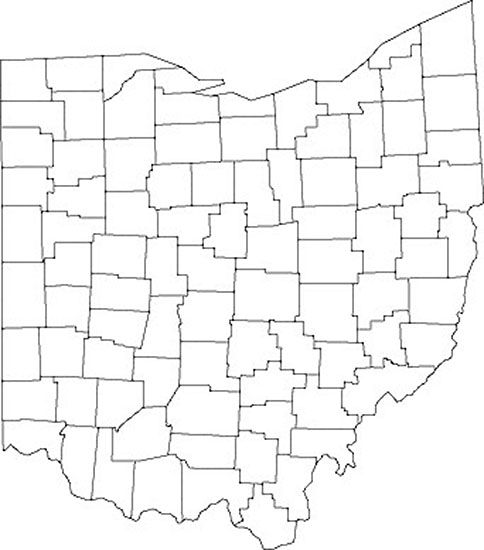
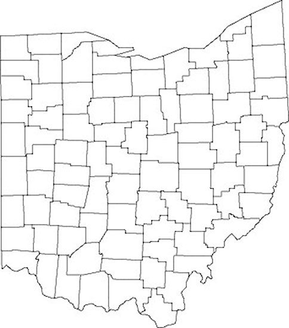

Find us on Twitter
Find us on TwitterOhio
Click on a county or an area of the map to open a document describing agriculture and weather variability in that state region.
|  |

Farmer Decision Tools |
Click on a county or an area of the map to open a document describing agriculture and weather variability in that state region.
|  |
U.S. climate trends are impacting corn-based cropping systems and threatening agricultural investments. In response, farmers are seeking new ways to ensure continued crop productivity while also minimizing environmental impact.
Farmers and scientists in the Corn Belt discussing cover crops, weather, tillage, drainage water managment and much more.
SUSTAINABLECORN.ORG | Website Administrator
This material is based upon work that is supported by the National Institute of Food and
Agriculture, U.S. Department of Agriculture, under award number 2011-68002-30190
Any opinions, findings, conclusions, or recommendations expressed on this website are those of the author(s)
and do not necessarily reflect the view of the U.S. Department of Agriculture.